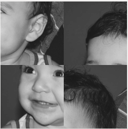
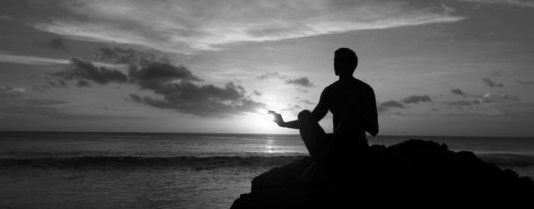

Regiões
Esse programa solicita ao usuário as coordenadas de dois pontos P1 e P2 localizados dentro dos limites do tamanho da imagem e exibe que lhe for fornecida. Entretanto, a região definida pelo retângulo de vértices opostos definidos pelos pontos P1 e P2 será exibida com o negativo da imagem na região correspondente. O efeito é ilustrado na Figura

No exemplo acima os pontos são (45,80) e (190,150). Segue abixo o código escrito na linguagem python (cv2)

Trocar regiões
O programa troca os quadrantes aleatóriamente. O efeito é ilustrado na Figura:

Segue abixo o código escrito na linguagem python (cv2)

Labeling
O programa conta a quantidade de objetos presentes em uma cena e Uma das maneiras de identificar as regiões de forma única é através de rotulação. A rotulação de regiões é o processo pelo qual regiões com características comuns recebem um identificador comum (rótulo). Observando-se o programa abxio, é possível verificar que caso existam mais de 255 objetos na cena, o processo de rotulação poderá ficar comprometido e para tratar essa situação basta setar um número fixo para rotulação.
Assim, rotulamos das várias regiões da imagem. Assumindo que os pixels do objeto possuem tom de cinza igual a 255, o algoritmo percorre toda a imagem, linha após linha, de cima a baixo, da esquerda para direita por pixels que tenham tom igual a 255. Quando um elemento da matriz é encontrado com tom de cinza igual a 255, o algoritmo floodfill é executado utilizando as coordenadas desse ponto como semente. Segue a imagem abaixo contedo o resultado da quantidade de objetos encontrados:
A contagem funciona percorrendo as linhas e colunas da image em busca de elementos com tom de cinza igual a 255 (pixel de objeto). Quando encontrado, incrementa-se o contador de objeto e executa-se o algoritmo floodfill na imagem utilizando o pixel encontrado como semente. Observe que a região à qual o pixel pertence será rotulada com tom de cinza igual ao número de contagem de objetos atual. O processo continua até que toda a imagem tenha sido rotulada. Segue o código:
Aprimorando o algoritmo de contagem apresentado para identificar regiões com ou sem buracos internos que existam na cena. assumindo que objetos com mais de um buraco podem existir e inclindo suporte no algoritmo para não contar bolhas que tocam as bordas da imagem. Não se pode presumir, a priori, que elas tenham buracos ou não.
Assim, a lógica utilizada para realizar esses procedimentos é basicamente criar uma mascara com fundo branco, pegar a imagem orinal e capiturar os buracos ("0"), em seguida retiramos as bordas da imagem original e por fim, o algoritmo flodFill para contarmos a quantidade de objetos com buracos (na mascara) e sem buracos. O efeito é ilustrado na figura.


Filtro Homomórfico
Sabendo que o filtro homomórfico atenua as baixas-frequências e realça as altas baseando-se no modelo de iluminação-reflectância com a idéia de que a “iluminação” (γL) é componente de baixa-frequência e a “reflectância” de alta-freqüência (γH). Considerando a curva gaussiana:

γH = 5.5
γL = 0
C = 0.5
Do = 20


Segue o link para o código: Homomorfico.cpp